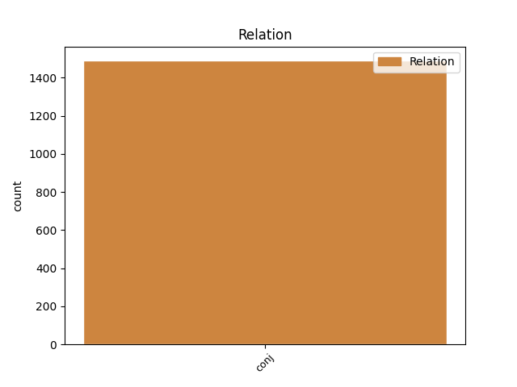
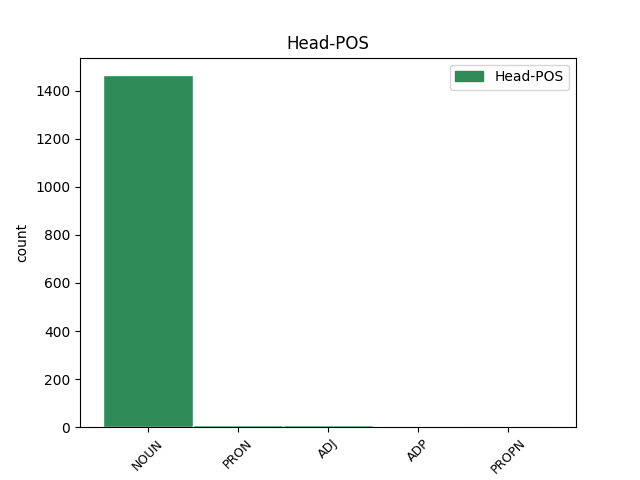
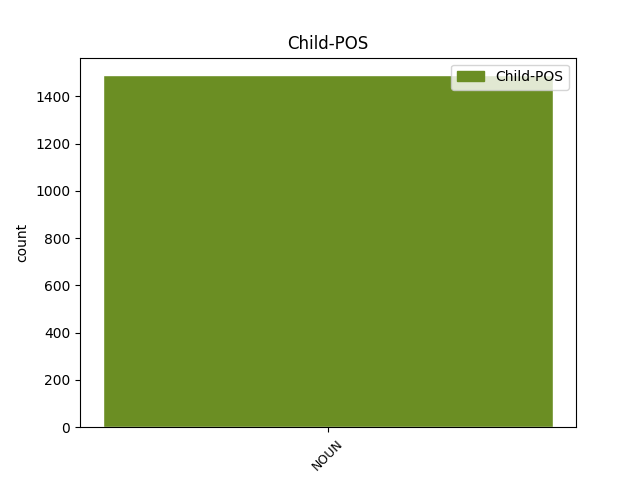

Distribution of features within this leaf



Agreement Rules sorted by frequency.
- When the dependent token is the conjunct(conj) of the head token, and the dependent token is NOUN.
1 Deviația _ _ _ _ 0 _ _ _
2 medie _ _ _ _ 0 _ _ _
3 absolută _ _ _ _ 0 _ _ _
4 , _ _ _ _ 0 _ _ _
5 varianța varianță NOUN Ncfsry Case=Acc,Nom|Definite=Def|Gender=Fem|Number=Sing 0 _ _ _
6 și _ _ _ _ 0 _ _ _
7 deviația deviație NOUN Ncfsry Case=Acc,Nom|Definite=Def|Gender=Fem|Number=Sing 5 conj _ _
8 standard _ _ _ _ 0 _ _ _
9 măsoară _ _ _ _ 0 _ _ _
10 dispersia _ _ _ _ 0 _ _ _
11 față _ _ _ _ 0 _ _ _
12 de _ _ _ _ 0 _ _ _
13 media _ _ _ _ 0 _ _ _
14 aritmetică _ _ _ _ 0 _ _ _
15 . _ _ _ _ 0 _ _ _
Disagree Examples:
1 Teheranul _ _ _ _ 0 _ _ _
2 a _ _ _ _ 0 _ _ _
3 anunțat _ _ _ _ 0 _ _ _
4 reluarea _ _ _ _ 0 _ _ _
5 programului program NOUN Ncmsoy Case=Dat,Gen|Definite=Def|Gender=Masc|Number=Sing 0 _ _ _
6 său _ _ _ _ 0 _ _ _
7 nuclear _ _ _ _ 0 _ _ _
8 și _ _ _ _ 0 _ _ _
9 cercetările cercetare NOUN Ncfpry Case=Acc,Nom|Definite=Def|Gender=Fem|Number=Plur 5 conj _ _
10 suspendate _ _ _ _ 0 _ _ _
11 la _ _ _ _ 0 _ _ _
12 cererea _ _ _ _ 0 _ _ _
13 Uniunii _ _ _ _ 0 _ _ _
14 Europene _ _ _ _ 0 _ _ _
15 . _ _ _ _ 0 _ _ _
1 Dacă _ _ _ _ 0 _ _ _
2 Piața _ _ _ _ 0 _ _ _
3 de _ _ _ _ 0 _ _ _
4 Gros _ _ _ _ 0 _ _ _
5 se _ _ _ _ 0 _ _ _
6 va _ _ _ _ 0 _ _ _
7 finaliza _ _ _ _ 0 _ _ _
8 în _ _ _ _ 0 _ _ _
9 2006 _ _ _ _ 0 _ _ _
10 , _ _ _ _ 0 _ _ _
11 celelalte _ _ _ _ 0 _ _ _
12 două _ _ _ _ 0 _ _ _
13 proiecte _ _ _ _ 0 _ _ _
14 vor _ _ _ _ 0 _ _ _
15 continua _ _ _ _ 0 _ _ _
16 în în ADP Spsa AdpType=Prep|Case=Acc 0 _ _ _
17 2006 _ _ _ _ 0 _ _ _
18 și _ _ _ _ 0 _ _ _
19 anii an NOUN Ncmpry Case=Acc,Nom|Definite=Def|Gender=Masc|Number=Plur 16 conj _ _
20 următori _ _ _ _ 0 _ _ _
21 , _ _ _ _ 0 _ _ _
22 constituind _ _ _ _ 0 _ _ _
23 o _ _ _ _ 0 _ _ _
24 componentă _ _ _ _ 0 _ _ _
25 a _ _ _ _ 0 _ _ _
26 priorităților _ _ _ _ 0 _ _ _
27 municipalității _ _ _ _ 0 _ _ _
28 . _ _ _ _ 0 _ _ _
1 Având _ _ _ _ 0 _ _ _
2 în _ _ _ _ 0 _ _ _
3 vedere _ _ _ _ 0 _ _ _
4 Tratatul _ _ _ _ 0 _ _ _
5 de _ _ _ _ 0 _ _ _
6 instituire _ _ _ _ 0 _ _ _
7 a _ _ _ _ 0 _ _ _
8 Comunității _ _ _ _ 0 _ _ _
9 Europene _ _ _ _ 0 _ _ _
10 , _ _ _ _ 0 _ _ _
11 în _ _ _ _ 0 _ _ _
12 special _ _ _ _ 0 _ _ _
13 art. _ _ _ _ 0 _ _ _
14 137 _ _ _ _ 0 _ _ _
15 alin. _ _ _ _ 0 _ _ _
16 ( _ _ _ _ 0 _ _ _
17 2 _ _ _ _ 0 _ _ _
18 ) _ _ _ _ 0 _ _ _
19 , _ _ _ _ 0 _ _ _
20 hotărând _ _ _ _ 0 _ _ _
21 în _ _ _ _ 0 _ _ _
22 conformitate _ _ _ _ 0 _ _ _
23 cu _ _ _ _ 0 _ _ _
24 procedura _ _ _ _ 0 _ _ _
25 prevăzută _ _ _ _ 0 _ _ _
26 în _ _ _ _ 0 _ _ _
27 art. _ _ _ _ 0 _ _ _
28 251 _ _ _ _ 0 _ _ _
29 din _ _ _ _ 0 _ _ _
30 Tratat _ _ _ _ 0 _ _ _
31 , _ _ _ _ 0 _ _ _
32 ( _ _ _ _ 0 _ _ _
33 1 _ _ _ _ 0 _ _ _
34 ) _ _ _ _ 0 _ _ _
35 Directiva _ _ _ _ 0 _ _ _
36 Consiliului _ _ _ _ 0 _ _ _
37 93 _ _ _ _ 0 _ _ _
38 / _ _ _ _ 0 _ _ _
39 104 _ _ _ _ 0 _ _ _
40 / _ _ _ _ 0 _ _ _
41 CE _ _ _ _ 0 _ _ _
42 din _ _ _ _ 0 _ _ _
43 23 _ _ _ _ 0 _ _ _
44 noiembrie _ _ _ _ 0 _ _ _
45 1993 _ _ _ _ 0 _ _ _
46 privind _ _ _ _ 0 _ _ _
47 anumite _ _ _ _ 0 _ _ _
48 aspecte _ _ _ _ 0 _ _ _
49 ale _ _ _ _ 0 _ _ _
50 organizării _ _ _ _ 0 _ _ _
51 timpului _ _ _ _ 0 _ _ _
52 de _ _ _ _ 0 _ _ _
53 lucru _ _ _ _ 0 _ _ _
54 , _ _ _ _ 0 _ _ _
55 care _ _ _ _ 0 _ _ _
56 stabilește _ _ _ _ 0 _ _ _
57 cerințele _ _ _ _ 0 _ _ _
58 minime _ _ _ _ 0 _ _ _
59 de _ _ _ _ 0 _ _ _
60 securitate _ _ _ _ 0 _ _ _
61 și _ _ _ _ 0 _ _ _
62 sănătate _ _ _ _ 0 _ _ _
63 în _ _ _ _ 0 _ _ _
64 materie _ _ _ _ 0 _ _ _
65 de _ _ _ _ 0 _ _ _
66 organizare _ _ _ _ 0 _ _ _
67 a _ _ _ _ 0 _ _ _
68 timpului _ _ _ _ 0 _ _ _
69 de _ _ _ _ 0 _ _ _
70 lucru _ _ _ _ 0 _ _ _
71 , _ _ _ _ 0 _ _ _
72 aplicabile _ _ _ _ 0 _ _ _
73 perioadelor _ _ _ _ 0 _ _ _
74 de _ _ _ _ 0 _ _ _
75 repaus _ _ _ _ 0 _ _ _
76 zilnic _ _ _ _ 0 _ _ _
77 , _ _ _ _ 0 _ _ _
78 pauzelor _ _ _ _ 0 _ _ _
79 , _ _ _ _ 0 _ _ _
80 repaus _ _ _ _ 0 _ _ _
81 săptămânal _ _ _ _ 0 _ _ _
82 , _ _ _ _ 0 _ _ _
83 timpul _ _ _ _ 0 _ _ _
84 de _ _ _ _ 0 _ _ _
85 lucru _ _ _ _ 0 _ _ _
86 maxim _ _ _ _ 0 _ _ _
87 săptămânal _ _ _ _ 0 _ _ _
88 , _ _ _ _ 0 _ _ _
89 concediul _ _ _ _ 0 _ _ _
90 anual _ _ _ _ 0 _ _ _
91 , _ _ _ _ 0 _ _ _
92 precum _ _ _ _ 0 _ _ _
93 și _ _ _ _ 0 _ _ _
94 anumite _ _ _ _ 0 _ _ _
95 aspecte _ _ _ _ 0 _ _ _
96 ale _ _ _ _ 0 _ _ _
97 muncii muncă NOUN Ncfsoy Case=Dat,Gen|Definite=Def|Gender=Fem|Number=Sing 0 _ _ _
98 de _ _ _ _ 0 _ _ _
99 noapte _ _ _ _ 0 _ _ _
100 , _ _ _ _ 0 _ _ _
101 munca muncă NOUN Ncfsry Case=Acc,Nom|Definite=Def|Gender=Fem|Number=Sing 97 conj _ _
102 în _ _ _ _ 0 _ _ _
103 ture _ _ _ _ 0 _ _ _
104 și _ _ _ _ 0 _ _ _
105 ritmul _ _ _ _ 0 _ _ _
106 muncii _ _ _ _ 0 _ _ _
107 , _ _ _ _ 0 _ _ _
108 a _ _ _ _ 0 _ _ _
109 fost _ _ _ _ 0 _ _ _
110 modificată _ _ _ _ 0 _ _ _
111 în _ _ _ _ 0 _ _ _
112 mod _ _ _ _ 0 _ _ _
113 semnificativ _ _ _ _ 0 _ _ _
114 . _ _ _ _ 0 _ _ _
1 Statele _ _ _ _ 0 _ _ _
2 membre _ _ _ _ 0 _ _ _
3 pot _ _ _ _ 0 _ _ _
4 dispune _ _ _ _ 0 _ _ _
5 de _ _ _ _ 0 _ _ _
6 un _ _ _ _ 0 _ _ _
7 termen _ _ _ _ 0 _ _ _
8 suplimentar _ _ _ _ 0 _ _ _
9 care _ _ _ _ 0 _ _ _
10 nu _ _ _ _ 0 _ _ _
11 poate _ _ _ _ 0 _ _ _
12 depăși _ _ _ _ 0 _ _ _
13 doi _ _ _ _ 0 _ _ _
14 ani _ _ _ _ 0 _ _ _
15 , _ _ _ _ 0 _ _ _
16 dacă _ _ _ _ 0 _ _ _
17 este _ _ _ _ 0 _ _ _
18 necesar _ _ _ _ 0 _ _ _
19 , _ _ _ _ 0 _ _ _
20 pentru _ _ _ _ 0 _ _ _
21 a _ _ _ _ 0 _ _ _
22 ține _ _ _ _ 0 _ _ _
23 cont _ _ _ _ 0 _ _ _
24 de _ _ _ _ 0 _ _ _
25 dificultățile _ _ _ _ 0 _ _ _
26 de _ _ _ _ 0 _ _ _
27 a _ _ _ _ 0 _ _ _
28 respecta _ _ _ _ 0 _ _ _
29 dispozițiile _ _ _ _ 0 _ _ _
30 privind _ _ _ _ 0 _ _ _
31 timpul _ _ _ _ 0 _ _ _
32 de _ _ _ _ 0 _ _ _
33 lucru _ _ _ _ 0 _ _ _
34 în _ _ _ _ 0 _ _ _
35 ceea _ _ _ _ 0 _ _ _
36 ce _ _ _ _ 0 _ _ _
37 privește _ _ _ _ 0 _ _ _
38 responsabilitățile _ _ _ _ 0 _ _ _
39 lor _ _ _ _ 0 _ _ _
40 în _ _ _ _ 0 _ _ _
41 materie _ _ _ _ 0 _ _ _
42 de _ _ _ _ 0 _ _ _
43 organizare _ _ _ _ 0 _ _ _
44 și _ _ _ _ 0 _ _ _
45 prestare prestare NOUN Ncfsrn Case=Acc,Nom|Definite=Ind|Gender=Fem|Number=Sing 0 _ _ _
46 a _ _ _ _ 0 _ _ _
47 serviciilor serviciu NOUN Ncfpoy Case=Dat,Gen|Definite=Def|Gender=Fem|Number=Plur 45 conj _ _
48 de _ _ _ _ 0 _ _ _
49 sănătate _ _ _ _ 0 _ _ _
50 și _ _ _ _ 0 _ _ _
51 îngrijire _ _ _ _ 0 _ _ _
52 medicală _ _ _ _ 0 _ _ _
53 . _ _ _ _ 0 _ _ _
1 Statele _ _ _ _ 0 _ _ _
2 membre _ _ _ _ 0 _ _ _
3 iau _ _ _ _ 0 _ _ _
4 măsurile _ _ _ _ 0 _ _ _
5 necesare _ _ _ _ 0 _ _ _
6 pentru pentru ADP Spsa AdpType=Prep|Case=Acc 0 _ _ _
7 ca _ _ _ _ 0 _ _ _
8 numărul _ _ _ _ 0 _ _ _
9 de _ _ _ _ 0 _ _ _
10 ore _ _ _ _ 0 _ _ _
11 de _ _ _ _ 0 _ _ _
12 lucru _ _ _ _ 0 _ _ _
13 săptămânale _ _ _ _ 0 _ _ _
14 să _ _ _ _ 0 _ _ _
15 nu _ _ _ _ 0 _ _ _
16 depășească _ _ _ _ 0 _ _ _
17 în _ _ _ _ 0 _ _ _
18 niciun _ _ _ _ 0 _ _ _
19 caz _ _ _ _ 0 _ _ _
20 media _ _ _ _ 0 _ _ _
21 de _ _ _ _ 0 _ _ _
22 58 _ _ _ _ 0 _ _ _
23 în _ _ _ _ 0 _ _ _
24 timpul _ _ _ _ 0 _ _ _
25 primilor _ _ _ _ 0 _ _ _
26 trei _ _ _ _ 0 _ _ _
27 ani _ _ _ _ 0 _ _ _
28 ai _ _ _ _ 0 _ _ _
29 perioadei _ _ _ _ 0 _ _ _
30 de _ _ _ _ 0 _ _ _
31 tranziție _ _ _ _ 0 _ _ _
32 , _ _ _ _ 0 _ _ _
33 media _ _ _ _ 0 _ _ _
34 de _ _ _ _ 0 _ _ _
35 56 _ _ _ _ 0 _ _ _
36 pentru _ _ _ _ 0 _ _ _
37 următorii _ _ _ _ 0 _ _ _
38 doi _ _ _ _ 0 _ _ _
39 ani _ _ _ _ 0 _ _ _
40 și _ _ _ _ 0 _ _ _
41 media medie NOUN Ncfsry Case=Acc,Nom|Definite=Def|Gender=Fem|Number=Sing 6 conj _ orig_deprel=obj
42 de _ _ _ _ 0 _ _ _
43 52 _ _ _ _ 0 _ _ _
44 pentru _ _ _ _ 0 _ _ _
45 orice _ _ _ _ 0 _ _ _
46 perioadă _ _ _ _ 0 _ _ _
47 suplimentară _ _ _ _ 0 _ _ _
48 . _ _ _ _ 0 _ _ _